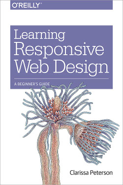
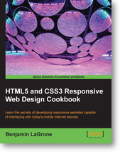

Before start
Start day 1
[1.1]
[1.2]
[1.3]
[1.4]
[1.5]
Start day 2
[2.1]
[2.2]
[2.3]
[2.4]
[2.5]
[2.6]
[2.7]
Start day 3
[3.1]
[3.2]
[3.3]
[3.4]
[3.5]
[3.6]
Responsive webdesign (day 3, part 3)
Short history
Ethan Marcotte first wrote about responsive web design (http://alistapart.com/article/responsive-web-design) in A List Apart in 2010.
Viewport
The viewport meta tag tells the browser how to behave when it renders the webpage, you can tell it how big the viewport will be
The best thing to do for responsive design is to set the width of the viewport to be the same as whatever device is being used.
<meta name="viewport" content="width=device-width">
Other options that can be set are:
- initial-scale
- maximum-scale
- user-scallable=no/yes
- width=500
A short introduction can be found at http://www.paulund.co.uk/understanding-the-viewport-meta-tag
Excercises:
- Set the viewport to a maxwidth of 320 and see what happens in the browser
- Set user scallabillity on a device which can zoom/pinch and see that you can control these charachteristics
A little slow but very thorough video can be found at http://www.youtube.com/watch?v=QySGUt0UI5c. This presentation is of the same author as the HTML5 and CSS3 Responsive Webdesign Cookbook


Media query
Since CSS 2.1 style sheets have some measure of device awareness through media types. Most commonly used are print and screen.
<link rel="stylesheet" type="text/css" href="core.css" media="screen" />
<link rel="stylesheet" type="text/css" href="print.css" media="print" />
The W3C created media queries as part of the CSS3 specification, improving upon the promise of media types. A media query allows us to target not only certain device classes, but to actually inspect the physical characteristics of the device rendering our work.
@media print {
body { font-size: 10pt }
}
@media screen {
body { font-size: 13px }
}
@media screen, print {
body { line-height: 1.2 }
}
Setting breakpoints
@media screen and ( max-width: 1024px ) {...}
@media screen and ( min-width: 1025px ) {...}
http://i-skool.co.uk/mobile-development/web-design-for-mobiles-and-tablets-viewport-sizes/